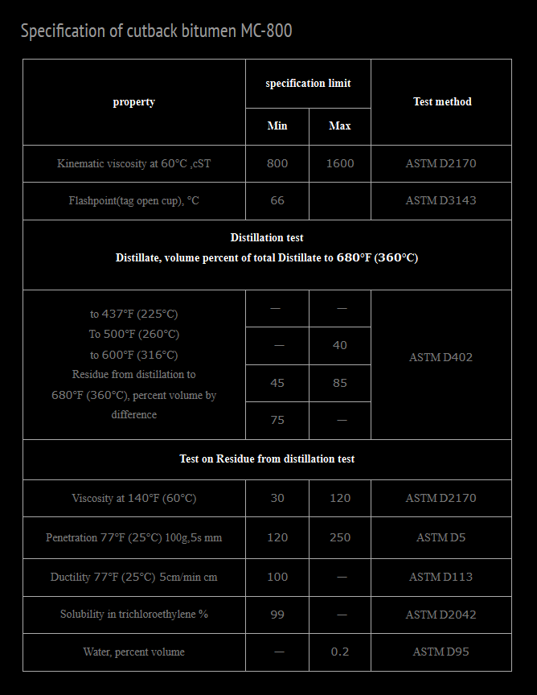

Cutback Bitumen MC‑800 – General Description │ Iran Bitumen Supply Int │ IBSI
Cutback Bitumen MC‑800 is a medium‑curing cutback asphalt produced by dissolving high‑quality penetration‑grade bitumen in kerosene or other medium‑volatility petroleum solvents. This blending process temporarily reduces the viscosity of the bitumen, allowing it to be applied easily at lower temperatures without heating. Once applied, the solvent gradually evaporates, leaving behind a strong, durable bitumen binder that performs the same function as conventional asphalt cement. MC‑800 is formulated to provide a slower curing rate and higher viscosity than lighter cutback grades such as MC‑30 or MC‑70. This makes it particularly suitable for applications where deeper penetration, longer working time, and enhanced binding strength are required. The softened mixture wets aggregates effectively, making it ideal for seal coats, prime coats, and cold‑applied asphalt treatments. At Iran Bitumen Supply Int │ IBSI, our MC‑800 is produced from premium vacuum residue feedstock and blended with carefully selected petroleum solvents to ensure consistent curing behavior and full compliance with ASTM D2028 specifications. The thermoplastic nature of the base bitumen ensures reliable performance across a wide range of temperatures, softening when heated and hardening as it cools.
Understanding How MC‑800 Works
Cutback bitumen is created by dissolving bitumen in volatile petroleum solvents. In MC‑800, kerosene is used as the primary cutter to achieve a medium curing rate with higher viscosity. This temporary reduction in viscosity allows the bitumen to penetrate granular surfaces, coat mineral particles, and create a strong adhesive layer. As the solvent evaporates, the bitumen returns to its original hardness and viscosity, forming a durable, waterproof, and stable bond. Proper evaporation is essential; if too much solvent remains, the pavement may remain soft longer than desired. When formulated correctly, MC‑800 provides excellent adhesion, durability, and long‑term performance.
Applications of Cutback Bitumen MC‑800
Cutback Bitumen MC‑800 is widely used in road construction and maintenance, particularly in prime coats, patching mixes, and stockpile asphalt mixtures. Its higher viscosity makes it suitable for applications requiring deeper penetration and stronger binding of granular surfaces. MC‑800 is used to prepare non‑asphalt base courses before applying hot mix asphalt. It fills capillary voids, stabilizes loose particles, and creates a waterproof barrier that enhances the performance of the final pavement structure. It is also used in cold‑applied asphalt mixes where heating is not practical or available. In waterproofing applications, MC‑800 is applied to seal surfaces, protect against moisture ingress, and bond mineral particles. Its ability to penetrate and stabilize surfaces makes it valuable for both new construction and maintenance operations.
Packing Options for Cutback Bitumen MC‑800
At Iran Bitumen Supply Int │ IBSI, MC‑800 is supplied in packaging formats designed for safe handling and efficient transport. It is available in new thick steel drums placed on pallets to prevent leakage during containerized shipping, as well as in bulk bitutainers and tanker trucks for large‑scale projects. These packaging options ensure that the product arrives in optimal condition and is ready for immediate use on site.

Specification of Bitumen MC‑800